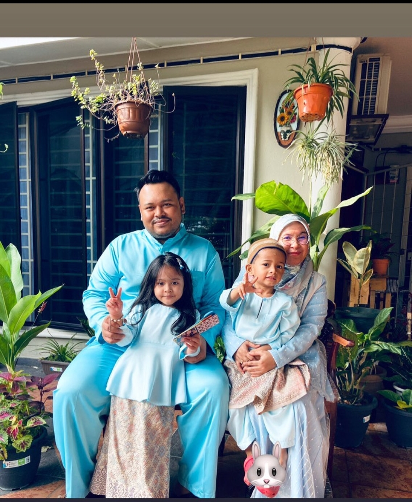
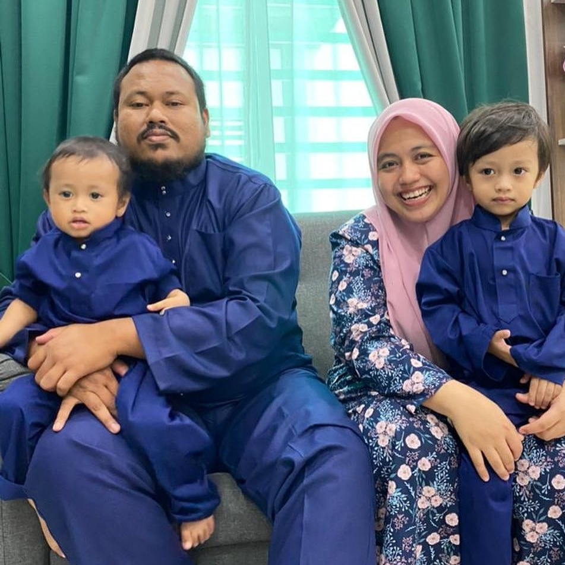
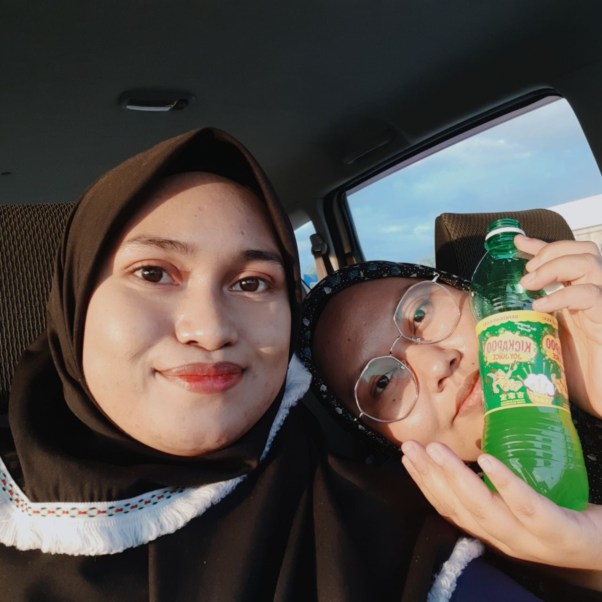

I have three older siblings,, and I am the youngest among them. To be honest, I don't really have much childhood memory with them because of
my huge age gap with them. When I grew up, they already entered university to further their study, so I don't get to have much childhood memory with them.
I only have memories with them only after I grew up. This happened because they are at their university and not at home. I had an age gap of thirteen
years with my eldest brother, ten years age gap with my second brother, and six year age gap with my older sister. I think my older sister is the one that
I have many memories with.
MY ELDEST BROTHER AND HIS FAMILY

AHMAD KAMAL BIN AHMAD
Born on 28.06.1988
33 Years Old
Has 3 Children, 1 daughter and 2 sons
Lunas, Kedah
EDUCATIONAL BACKGROUND
Receive his Diploma in Chemichal Engenireeng at UiTM Pulau Pinang and receive his Bachelor Degree in Chemical Engineering at UiTM Shah Alam
PERSONAL LIFE
My brother and his wife have been classmates since their Diploma at UiTM Pulau Pinang until their Bachelor Degree. They got married after 10
years of being friends after my mom took a liking towards my sister-in-law. Now they are blessed with three children, and their third child was just
born 2 weeks ago.
PERSONALITY
He is a responsible and a hardworking person. My brothers are someone that is petty to himself but not to others. He is willing to spend money on his family instead of himself, sometimes he will get scolded because he was being petty to himself. Nowadays, his wife is the one that bought things for him using his money because if she let him, he would never have bought anything for himself. Why did I say he is a hardworking person? It is because my brother would work hard in any job of his even though it was a different field from what he learned during university. He is willing to learn new things for the job and make sure that he does the job with responsibility. My brother used to work as a manager at a restaurant after he quit from offshore at Schlumberger company, a whole different field right? But due to his hard work he managed to work without difficulties for two years before he quit and continued to work at an oil and gas company until now. Well he got back on track to his field of study right?
MY SECOND BROTHER AND HIS FAMILY

AHMAD NURRAHMAN BIN AHMAD
Born on 10.06.1991
30 Years Old
Medical Assistant at USM Pulau Pinang
Has 2 Children, both are sons.
Lunas, Kedah
EDUCATIONAL BACKGROUND
Receive his Diploma in Medical Assistant at USM Pulau Pinang and receive his Bachelor Degree in Psychology at UKM.
PERSONAL LIFE
My brother and his wife got married to each other due to their parents' arrangement. My parents and my sister-in-law's parents met during pilgrimage in 2013 and joked about arranging for their children to get married and in 2016 my brother got married to my sister-in-law. I always said that their marriage story is beautiful because it was planned in Makkah.
PERSONALITY
My second brother is a calm, generous and an obedient son to my parents. My brother and his wife are almost identical to each other, they love to spend money for their family at any occasion. Based on my observation, due to their generosity to family and other people, they are never short on money. Even though they are short on money, they will eventually be able to hold on until their pay day. Because of them I learned a good lesson almost every day, if you're being generous to Allah, Allah will help you during hard times. I saw it with my two eyes of Allah's power on helping his servants that are doing good deeds for others.
MY OLDER SISTER

FARAH LINA BINTI AHMAD
Born on 29.03.1995
26 Years Old
An English Teacher at IKTBN Bukit Mertajam
Lunas, Kedah
EDUCATIONAL BACKGROUND
Receive her Diploma in Teaching English as a Second Language (TESL) at MSU and currently continuing her study in Bachelor Degree of Teaching
English as a Second Language (TESL) at OUM.
PERSONALITY
My sister is a bubbly person and loved by most of her students and colleague because of it. My sister has her own method when teaching, which is to teach with a happy environment instead of being a strict and scary teacher. Due to her teaching method, most of her students can fully understand what she's teaching. Another trait of hers is, she loves to talk with the opposite of me, and usually we fight because of this. My sister would always talk, and I am the one who always listens to whatever she's mumbling about.